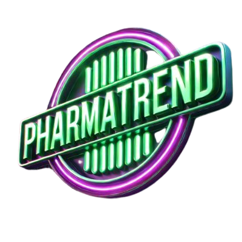
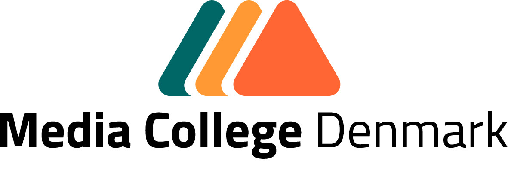
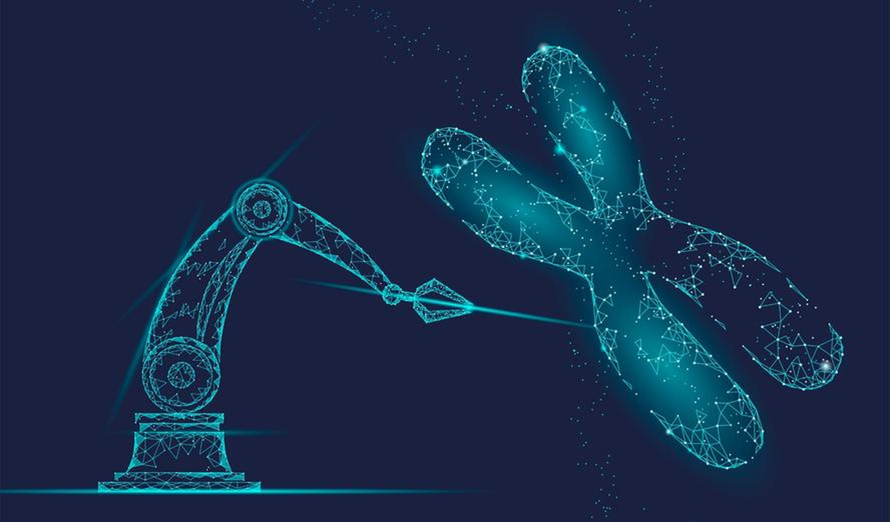

- Bioteknologi forklaretHurtigere computation, bedre algoritmer og etiske rammer—vi bygger løsninger, der gør forskel i sundhed, byrum og grøn omstilling.
Se hvordanVores fokus er at omsætte avanceret teknologi til bæredygtige valg i hverdagen—fra AI-drevne analyser, der accelererer forskning, til data-design, der styrker demokratiet og respekterer privatliv.

AI i biomedicin er ikke nyt, men effekten eksploderer med bedre algoritmer og mere regnekraft. Hvor man før testede tusindvis af molekyler i laboratoriet, kan vi nu simulere og udvælge de mest lovende kandidater til virkelige forsøg. Præcisionen stiger—omkostningerne falder.

Vi forbinder sensorer, materialer og data for at skabe robuste løsninger til byer og virksomheder: energioptimering, monitorering og bedre beslutninger—uden greenwashing.
God teknologi er også god etik. Vi arbejder efter principper om dataminimering, gennemsigtighed og forkslarlige modeller, så brugere og borgere forstår beslutningerne—og kan sige fra.
Her kan du læse mere i vores præsentation og kursusnoter.
PDF'erne åbnes i en ny fane. Hvis de ikke vises korrekt, højreklik og “Gem som…”.
Skriv kort hvad du vil bygge, så vender vi tilbage hurtigst muligt.